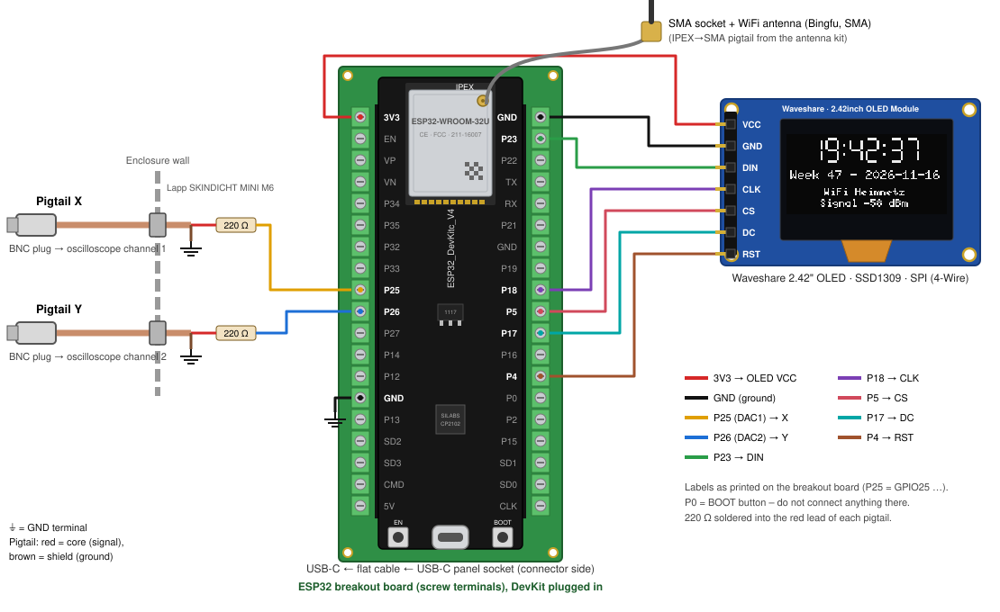

ESP32 Oscilloscope Clock
ProjektProject
Eine analoge Uhr, gezeichnet vom Elektronenstrahl: Ein ESP32 erzeugt mit seinen beiden DACs die Spannungen für X und Y und fährt Zifferblatt, Ziffern und Zeiger etwa 230-mal pro Sekunde ab – mit Zeit aus dem Internet, OLED-Anzeige am Gerät und einem Webinterface fürs Handy.
An analogue clock drawn by the electron beam: an ESP32 generates the X and Y voltages with its two DACs and traces dial, numerals and hands about 230 times per second – with time from the internet, an OLED display on the device and a web interface for your phone.
Webinterface ausprobierenTry the web interface TestseiteTest pageLäuft ohne Uhr im Browser, alle Werte sind simuliertRuns in the browser without a clock, all values are simulated› GitHubQuellcode, Anleitung und WerkzeugeSource code, guide and tools›FunktionenFeatures
Genaue ZeitAccurate timePer NTP, stündlich abgeglichen, automatische Sommerzeit; optional Echtzeituhr DS3231 für den Betrieb ohne InternetVia NTP, synced hourly, automatic daylight saving time; optional DS3231 real-time clock for use without internet
Gleich helle LinienEqually bright linesKonstante Strahlgeschwindigkeit, kaum sichtbare Rücklaufspuren, ca. 230 Bilder pro SekundeConstant beam speed, barely visible retrace lines, approx. 230 frames per second
Fünf ZifferblätterFive dialsZiffern, römisch oder nur Striche – dazu ein Testbild zum Einstellen des OszilloskopsNumerals, Roman or ticks only – plus a test pattern for adjusting the oscilloscope
Für jedes OszilloskopFor any oscilloscopeProfil DIGITAL für Speicher-Oszilloskope, ANALOG für Röhren – per BOOT-Taster oder WebinterfaceProfile DIGITAL for storage scopes, ANALOG for CRTs – via the BOOT button or the web interface
WebinterfaceLive-Vorschau, Status, alle Einstellungen, WLAN, Debug – Deutsch/Englisch, hell/dunkel, als App installierbarLive preview, status, all settings, Wi-Fi, debug – German/English, light/dark, installable as an app
OLED am Gerät (optional)OLED on the device (optional)Uhrzeit und Datum im 7-Segment-Stil, WLAN und SignalstärkeTime and date in 7-segment style, Wi-Fi and signal strength
Hardware
ESP32-WROOM-32U DevKitC V4Zwei 8-Bit-DACs an GPIO25/26, externe AntenneTwo 8-bit DACs on GPIO25/26, external antenna1×
Waveshare 2.42" OLEDSSD1309, 128 × 64, SPI – im Prototyp verbaut, die Uhr läuft auch ohneSSD1309, 128 × 64, SPI – fitted in the prototype, the clock also runs without itoptional
BNC-Pigtails mit 220 ΩBNC pigtails with 220 ΩX und Y, durch Kabelverschraubungen M6X and Y, through M6 cable glands2×
Breakout-Board, USB-C-EinbaubuchseBreakout board, USB-C panel socketAlles in Schraubklemmen – auf dem DevKit wird nichts gelötetEverything in screw terminals – nothing is soldered on the DevKit1×
Abzweigdose 150 × 100 × 70 mmJunction box 150 × 100 × 70 mmMit Bohrplan im Maßstab 1:1 in der DokumentationWith a 1:1 drilling template in the documentation1×
Echtzeituhr DS3231DS3231 real-time clockOptional, I²C an GPIO21/22, Knopfzelle CR2032Optional, I²C on GPIO21/22, CR2032 coin celloptional
BilderPictures


